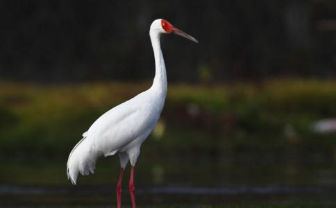

1992年11月21日，张厚义驾船驶到君山后面的裤裆湾时，猛地发现前方的芦苇丛里有两个小青年端著猎枪瞄准一只站在水边的大白鸟。在偷猎者就要扣响扳机的瞬间，张厚义大声喝道：“这是保护区，不能打鸟！”两名偷猎者当即收起猎枪溜走了。张厚义将船划过去。在离大鸟30米远时，他终于看清了大鸟的模样，顿时惊呆了。“这不是消失多年的白鹤吗？”
张厚义走近白鹤时，白鹤已经无力站起来了。张厚义急忙抱起白鹤仔细端详：这只鹤浑身洁白无瑕，长喙鲜红笔直，颈脖盘曲修长，左脚根部有一个暗红的伤口，渗出的血把脚根部的羽毛都染红了。显然白鹤已被偷猎者用枪打伤，如果不及时治疗，很快就会死去。
那段时间，张厚义特地买来红富士
蛰伏了20多天，白鹤的心情特别好，嘴里发出“咯咔咯咔”的欢叫声，不停地拍打著双翅。有时张厚义走累了，就让儿子张桥新接替。训练一周后，白鹤恢复了元气，显得神采飘逸，精神抖擞，可以重返蓝天了。
1992年12月28日下午，张厚义带著白鹤来到君山后湖放飞。入湖后的白鹤先是振动双翅，然后前引长颈，后伸秀腿，在一声声“咯咔、咯咔”的欢叫声中振翅飞翔，愈飞愈高。
没想到第二天一早，白鹤却又飞回了张厚义的家里。此后，张厚义在保护区工作人员的陪同下，又先后在保护区的大西湖、钱粮湖、采桑湖三次放飞白鹤。可是，每次放飞后，白鹤都在第二天早上飞回张厚义家。三番几次之后，张厚义没辙了。经请示保护区领导同意，他收养了这只通人性重
每天清晨，飞飞淮时6点钟起床，然后鼓羽亮翅，催主人起床。白天，张厚义去湖里打鱼，飞飞就在船儿前后翻飞，一会儿张开洁白的羽翼，低低盘旋在半空；一会儿又收起双翅，落在船头，安详地看着主人撒网捕鱼。到了晚上，飞飞就蜷缩在张厚义的脚下，把长嘴伸到主人的膝下……
转眼到了阳春三月，这个季节草长莺飞，也是洞庭湖的候鸟开始飞回北方的时候。清明节那天，一群鹤飞经张家上空，见状，飞飞一冲而起，跃过屋顶，飞向鹤群。但在天空盘旋了3圈以后，它又回到了地面。
3天后，当又一群鹤飞过张家上空时，飞飞发出了几声凄婉的鸣叫之后，再次向高空飞去。张厚义一家听到鹤鸣声，从屋里跑出来怔怔地望著远去的飞飞。可几分钟后，飞飞又一次返回到了地面，落到张厚义的肩上，伸出长长的脖子，在主人的脸上来回摩挲著。
看飞飞恋恋不捨的模样，张厚义轻轻地抚摸著飞飞的颈脖，呜咽著说：“去吧，你的同伴在等著你呢？”张厚义知道飞飞已到了求偶配对的时期，他怜爱地嘱咐道：“别忘了冬天回来时带个‘媳妇’回来，让我们也高兴高兴。”说完，他抱起飞飞抛向了天空。
1993年11月的一天深夜，刚进入梦乡的张厚义突然听到屋顶的上空传来几声清脆悦耳的鹤鸣声。第二天清晨，张厚义早早起了床。当他打开房门，两隻大白鸟谑地从房前的芦苇丛里径直朝他冲来。张厚义惊喜地发现走在前面的正是他日夜思念的飞飞。见到张厚义后，飞飞伸长脖子，拍打翅膀，嘴里不停地“咯咔咯咔”鸣叫，张厚义不禁热泪纵横，不停地抚摸著飞飞的脖子，诉说著久别的思念。
亲热够了后，张厚义注意到飞飞身后跟著的白鹤。这是一隻刚满4岁的雌性白鹤。它通体雪白，喙和脚像火一样红亮，亭亭玉立，就像是一名青春美少女。张厚义对著飞飞连连夸奖道：“真有出息。”
张厚义在侧房用木板和石棉瓦为它们搭了一个大鸟窝，并在上面铺了厚实的稻草，还在门上贴了一个大“喜”字，作为它们的“洞房”。末了，张厚义和家人商量著给飞飞媳妇取名“小雪”。
在飞飞和小雪度蜜月的日子里，张家人在每天的清晨和傍晚，均能看到它们欢乐的舞蹈表演。只见飞飞先轻舒两翼，“咯咔”鸣叫几声后，便轻盈地踏著舞步走向小雪，围著爱妻边转边舞。小雪也缓缓张开双翅，细挪脚步，轻巧地迎著丈夫翩翩起舞。舞到高潮时，
1994年元旦过后，心灵手巧的李霞平姑娘忍不住好奇心，多次前来张家观看白鹤。每次，张厚义的儿子张桥新总是十分热情地为她讲解白鹤的舞蹈艺术和永不弃离的“
转眼两年过去了。飞飞和小雪有了爱情结晶——一只身带黄点的雄性小白鹤。张厚义对这个“重孙子”格外疼爱，还给它取了个“东东”的乳名。
1998年11月17日下午，结结在河边採摘一朵漂亮的小花时，失足掉进了河里。东东吓得转来转去，嘴里发出惊慌的鸣叫声。此时，正在附近觅食的飞飞和小雪赶忙飞过来。见小主人落入水中，飞飞用喙碰了碰小雪，示意它与东东留下来看护小主人，自己则急忙朝主人家飞去。飞到家后，飞飞用嘴叼起张桥新和李霞平的裤管，狠劲地往外拉。见飞飞如此焦急的情形，张桥新夫妇顿感事情不妙，于是快步随飞飞跑到河边。
一到河边，见宝贝女儿已被河水卷著正冲往洞庭湖，李霞平吓得脸色发白。张桥新急忙纵身跳入河中救起女儿。由于抢救及时，结结没什麽大碍。待到孩子苏醒过来，感动不已的李霞平一把抱住飞飞泪流满面。
每到候鸟北飞的3月，张厚义的心情总是特别难受。2000年3月，飞飞一家返北后，张厚义家恢复了宁静。
2000年11月18日一早，他推开门一看，只见自家屋边的湖边和芦苇丛里白茫茫的一片，在一阵“咯咔咯咔”声中，数百隻白鹤纷纷起飞，划破长空，顿时天空一片雪白。突然，3只白鹤离群朝张厚义直飞过来。飞飞一家又回来了，而且还带来了数不清的白鹤和各种候鸟。
东洞庭湖来了数百只白鹤的消息立即在国际湿地保护界引起轰动。要知道，此前，国际鹤类基金会宣布目前全世界只有320只白鹤。很快，来自美国、加拿大、澳大利亚、法国、日本等30多个国家和地区研究白鹤的专家和学者纷纷来东洞庭湖考察。乔治·阿基波博士也来了。经专家们近两年的考察，发现东洞庭湖湿地栖息着900多只白鹤，成为世界罕见的最大白鹤群。
2002年3月，飞飞没有飞回北方，而是留在了张厚义家，这年，夏季多雨，一向温驯可爱的飞飞一家突然显得烦躁不安，食欲大大下降，有时连续数天不到张厚义家来栖息。7月4日凌晨，正当人们进入梦乡时，飞飞一家突然拉警报似的在张厚义家的屋顶上空不停地尖叫，并猛力啄着张家的大门。飞飞一家反常的叫声惊醒了张厚义，他匆忙起床开门，发现屋外已是汪洋一片。“发大水了。”张厚义连忙叫醒家人和邻居。此时，村里不少村民也被白鹤的尖叫声惊醒了，大家纷纷收拾贵重物品乘船逃离。大伙刚上堤坝，张厚义回头一看，整个村庄已淹没在茫茫湖水之中……
白鹤挽救了300多人生命财产的消息传出后，东洞庭湖区的人们开始视白鹤为幸运鸟。湖区规定，每年白鹤来东洞庭湖度冬时，人们不得掏鸟蛋、毁鸟窝，不得在白鹤栖居的湖面上捕鱼打猎。这之后，东洞庭湖的白鹤愈来愈多，成了白鹤生长栖息的乐园。看着今日的成果，张厚义再次幸福地流泪，他没想到自己12年前的一次偶然善举，竟引来如此多的白鹤翩舞洞庭，让这片沉寂之地重现生机。这位曾经的猎鸟高手终于用自己12年的努力洗刷了当年的愧疚。现在，他最大的愿望就是希望洞庭湖永久地成为白鹤的快乐家园，让那曾经枪声不断的岁月成为永远的过去。